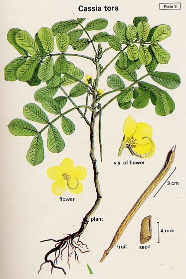

Cassia
tora Linn.
Taxonomic
Details

----- Correct Name
----- Classification
----- Synonyms
----- Common Names
Other Biological Details
----- Habit and Habitat
----- Diagnostic Features
----- Reproductive Biology
---------- Breeding System
---------- Phenology
---------- Pollinators
---------- Seed Biology
----------Seed Germination
------ Cultivation
----- Major Pests and Diseases
Economic Potential and Uses
----- Parts Used
----- Uses
----- Harvesting Practices
----- Produce and Products
----- Chemistry
----- Processing Techniques
----- Other uses
----- Economic Potential to the
Country
----- Export Potential
Miscellaneous Information
Literature
Taxonomic
Details
Correct
Name : Cassia
tora Linn.

Family : Caesalpinaceae
Synonyms :
Common Names :
English: Foetid Cassia, The Sicklesenna, Wild Senna
Hindi: Chakavat, Chakunda, panevar
Bengali: Chakunda, panevar
Malayalam: Chakramandarakam, takara
Marathi: Takala, tankli, tarota
Tamil: Senavu, taragai, vindhu
Telugu: chinnakasinda, tellakasinda
Kannada: Gandutogache, taragasi
Back
to Top
Other
Biological Details
HABIT
& HABITAT:
A foetid annual herb or under shrub, up to 1-2 m in height, found as a weed
throughout India, ascending up to an altitude of 1550 m in the Himalayas.
Availability :
Status :
Back
to Top
DIAGNOSTIC
FEATURES
Leaves
6.0-12.5 cm long, leaflets 3 pairs, 3-5 cm long, membranous, ovate oblong, with
glands in the last two pairs, showing sleeping movements; flowers bright yellow,
usually in pairs, on very short auxiliary peduncles; pods stout, 15-25 cm long;
seeds green, 25-30.
Back
to Top
REPRODUCTIVE
BIOLOGY
Breeding
System :
Phenology
:
Pollinators:
Seed Biology :
Seed Germination:
Cultivation:
Back
to Top
MAJOR
PESTS & DISEASES
Pests:
Diseases:
Back
to Top
Economic
Potential and Uses
Parts
used
Uses
·
The herb is
consumed by cattle when ensile in pits before flowering; wheat or paddy straw
can be added. The herb is also used as a feed for ostriches.
·
The young and
tender leaves and stems are eaten as a vegetable in soups; also the powder made
after their fermentation is added to foods as a condiment in Sudan.
·
The chicks fed
with washed leaf meal showed high rate of growth and efficiency.
·
A tea is
prepared from the leaves in Kumaun.
·
The unripe
fruits are cooked and eaten.
·
The seeds are
used in the preparation of sweets and also eaten in times of scarcity. The
powder of the roasted seeds is substituted for coffee. The seeds can be
introduced gradually as a protein rich food for livestock. The seeds are not
ordinarily relished in green condition, but when dried under the sun for 15-20
days and gradually introduced, the animals develop a taste for them. The boiled
or raw seeds can be included in limited quantities in the concentrates for milk
cows, buffalo calves and bullocks without adverse effect on milk or weight.
Harvesting
Practices
Produce and Products
Back
to Top
Chemistry
Analysis of the leaves gave the following values: moisture-82.5; protein-4.5;
fat-1.1; fibre-2.2; carbohydrates-8.0; minerals-1.7%; calcium-520;
phosphorous-39; iron-12.3; thiamine-0.19; riboflavin-0.83; nicotinic acid-0.83;
vitamin C- 82mg/100g; energy-60 cal/100g and carotene-16,920 IU. Presence of
emodin and kaempefrol-2-diglucoside is reported in the leaves. The leaves and
stem also contain d-mannitol, myricyl alcohol, beta sitosterol, glucose,
tigonelline, 1-stachydnine and choline. The stem bark yields ethyl arachidate
and behenic, marginic and palmitic acids, euphol, auropterol, beta-sitosterol,
basseol, emodin, rhein and 3,5,8,3',4',5'-hexahydroxy flavone. Analysis of the
seeds gave the following values; moisture-4.48; crude protein-23.77; fat-2.74;
crude fibre-13.14; carbohydrates-48.53; and ash-7.34; iron-0.187; and
phosphorous-0.362%. The pods contain tigonellin, l-stachydrine and choline.
Back
to Top
Processing Techniques
Back
to Top
Other
Uses
1.It
serves as a green manure particularly for acidic soils. It can withstand
polluted environment. The herb is substituted for soap in Rajasthan. The
seeds yield a gum (7.65%) which is the most efficient suspending agent for
calomel, kaolin and talc, when comparedwith guar, ghatti and gum from acacia
spp. It is a bindng agent for tables also. The seeds yield yellow, red and
blue coloured dyes used in dying and tanning.
2.Medicinal
Uses: Chakramardha
thailamu, a compound ayurvedic oil of this herb, is beneficial in
eczema, ringworm and other skin diseases. The herb posesses purgative and
anthelmintic properties. The aqueous and alcoholic extractsand the callus
cultures of the herb posesses antibacterial activity against gram negative
bacteria. The extracts also shows interferon like antiviral activity against
Ranikhet disease virus in culture. The mature leaves posesses purgative
properties and are sometimes utiolozed to adulterate true Senna; also used
as an antiperiodic and as anthelmintic. They are extremely useful in
ringworm and other skin diseases. The pounded leaves are applied as poultice
on cuts and wounds like tincture-iodine and for ulcers to hasten
suppuration. The leaves are also used for treatment of cough, and impetigo.
Pounded with egg-albumin, they are applied as a plaster for fractured bones.
A decoction of the leaves is given to children during teething and used for
eye troubles in Zambia; as a lotion it is applied in skin diseases. A paste
made of equal parts of leaves and seedsis given for jandice. The leaves
showed invitro antifungal activity against Curvularia verruculosa.
3.The
seeds can be used as tonmic and stomachic. A paste of the pulverised seeds
with lime juice is usuallu used for ringwornm and other skin diseases. Seeds
are also used in eye-diseasea, liver complaints and earache. The filtrate
obtained from the boiled powder of seeds is considered a blood-purifier and
is given in the inflamation of skin. The extract of seeds showed marked
contraction of the uterus of the guineapig. The pods are used in dysentery.
Back to Top
Economical
Potential to the country
Back
to Top
Export
Potential
Back
to Top
Miscellaneous
Information
Back
to Top
Literature
1.
The wealth of India,
A Dictionary of Indian Raw Materials and Industrial Products,
Vol. II. C, Publications and Information Directorate, CSIR, New Delhi,
India, 1950.
Back
to Top